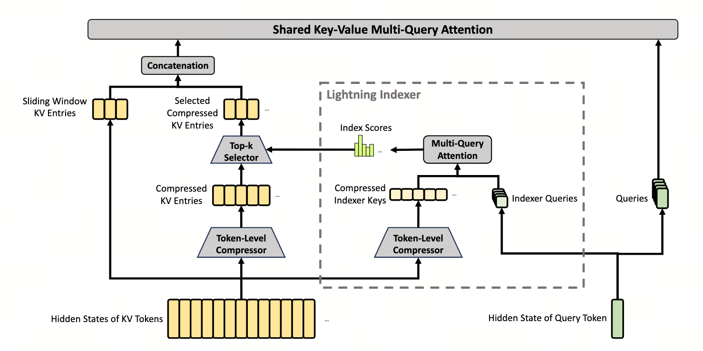

CSA — 长上下文的快通道
先把 1M 序列粗筛成 250K 个"超级 KV"，再让每个 query 只精读其中 1024 个 —— V4 长上下文的命脉。
CSA = Compressed Sparse Attention（压缩 + 稀疏 注意力）
把"每个 query 都要扫完 1M 个 KV"这个 $O(n^2)$ 的炸弹拆成两步： (1) 把每 $m$ 个原始 KV 压成 1 个"超级 KV"（$n \to n/m$，$m=4$）， (2) 用一套轻量化打分器从 $n/m$ 个超级 KV 里选 top-$k$（$k=1024$）。 每个 query 实际只精读 $k$ 个超级 KV，对应 $k \cdot m = 4096$ 个原始细粒度 token —— 比 1M 少了三个数量级。
- MLA（Multi-head Latent Attention，V3 的方案）
- 把 KV 通过低秩投影压到 $d_c$ 维 latent 缓存（V3 取 $d_c=512$，$d=7168$，缓存压 14×）。解决了"单 token KV 缓存大"，但没解决"序列变长后每 query 仍要扫全部 $n$ 个 token"。1M context 下还是 $O(n^2)$。
- Token-Level Compressor（CSA 第一步）
- 把相邻 $m$ 个原始 KV 用 softmax 加权平均成 1 个"超级 KV"（V4 paper 称 $C^{\text{Comp}}$）。$n=$ 1M $\to n/m=$ 250K。双流重叠：每个原始 token 同时贡献给两个相邻超级 KV，避免边界丢信息。
- Lightning Indexer（CSA 第二步）
- 一套更轻的 query/key 投影（参数量是核心 attention 的 1/8），用 ReLU（不是 softmax）给 250K 个超级 KV 打分。"Lightning"指它两个性质：计算便宜 + 支持流式 top-$k$（不必把所有分数实例化到内存）。
- Top-$k$ Selection
- 每个 query 用 indexer 分数选出最高的 $k$ 个超级 KV，只对它们做核心 attention。Pro 取 $k=1024$，Flash 取 $k=512$。$k\cdot m$（4096 / 2048）就是每个 query 实际能"看清"的细粒度 token 数。
- Shared-KV MQA（共享 KV 的多查询注意力）
- $n_h=128$ 个 head 共享同一份 KV，省去每 head 一份 KV 的开销。"Shared" 还有第二层意思：indexer 与核心 attention 共用同一份 query latent $\mathbf{c}^Q$，省一次大矩阵乘。
- Grouped Output Projection（分组输出投影）
- 核心 attention 的输出维度 $n_h \cdot c = 128 \times 512 = 65536$，直接投回 $d=7168$ 要 4.7 亿参数 / 层。把 head 切成 $g=16$ 组，先组内降到 $d_g=1024$，再 concat 跨组融合。压到 1.24 亿参数 / 层，省 73%。
- SWA（Sliding Window Attention，滑动窗口分支）
- 除了 top-$k$ 超级 KV，每个 query 额外读最近 $n_{\text{win}}=128$ 个原始未压缩 KV。压缩 + top-$k$ 容易把"最近几十个 token"融成一两个超级 KV，丢掉局部细节；SWA 兜住这一点。

1. V3 的 MLA 在 1M 上为什么不够
V3 的注意力是 MLA（Multi-head Latent Attention）：通过低秩投影把 KV 压到 $d_c$ 维 latent，每个 head 再升回。它解决的是"每个 token 的 KV 缓存太大"这一项。
- 原版每 token 的 KV 缓存 $\approx 2 \cdot n_h \cdot d_h$ bytes；
- MLA 只缓存 latent，缓存大小变 $d_c$，压缩 10-20×。
但 MLA 没解决的有三件事：
- 计算复杂度仍是 $O(n^2)$：每 query 仍要与所有 $n$ 个 KV 做点积；
- 缓存总量仍 $O(n)$：1M token × 512-dim latent × 2(K,V) × bf16 × 61 层仍要几百 GB；
- 注意力分布稀薄化：softmax 在 1M positions 上铺开，平均概率 $10^{-6}$，信号被噪声淹没。
64K → 1M： $n^2$ 从 $4.3 \times 10^9$ 涨到 $10^{12}$，放大 244×； 再乘 61 层 = $6.1 \times 10^{13}$ 次点积 / 单 token 推理。即便 H100 满速 $10^{15}$ FLOPs/s，单 token 也要 60 ms 就花在 attention 上 —— 每生成一个 token 都比一次 forward 慢一倍，无法接受。
缓存方面：MLA 每 token KV cache $\approx 2 \times 512 \times \text{bf16} = 2048$ B。1M tokens × 61 层 = $1.25 \times 10^{11}$ B = 125 GB，单 GPU 装不下。
所以 1M context 必须换思路 —— 不是把每个 KV 压更小，而是把 KV 的数量减少。
2. 两个独立想法，单独用都不够
想法 A · 稀疏注意力：让每个 query 只看 $k$ 个位置（如 Longformer 的 sliding window、BigBird 的 random+global+window）。
问题：要决定"哪 $k$ 个位置最相关"，需要先对所有 $n$ 个位置打分 —— 打分本身就是 $O(n)$ per query，总成本仍是 $O(n^2)$。靠规则强行选 $k$（如固定窗口）会丢真正相关的远端信息。
想法 B · 压缩注意力：把每 $m$ 个 KV 加权平均成 1 个超级 KV，序列长度 $n \to n/m$。
问题：超级 KV 是多个原始 token 的加权平均，query 无法精确读出某一具体 token 的 KV —— 细粒度访问能力丢了。
把两个想法串起来，正好对消彼此的弱点：
- 先压缩（$n \to n/m$），把"打分代价"从 $O(n)$ 降到 $O(n/m)$；
- 再用稀疏（top-$k$ 选超级 KV），避免 softmax 在大空间稀薄化。
最终每个 query 看到的"有效细粒度信息"是 $k \cdot m$ 个原始 token，但只为 $k$ 个超级 KV 付计算代价。
Step 1（Indexer 打分）：每 query 对 $n/m = 250\text{K}$ 个超级 KV 打分。Indexer 用 1/8 量级的小 head，每分数代价约 $n^I_h \cdot c^I = 64 \times 128 = 8192$ FLOPs。一个 query 的总打分代价 $= 250\text{K} \times 8192 = 2 \times 10^9$ FLOPs。
Step 2（Core attention）：每 query 在 $k=1024$ 个超级 KV 上做核心 attention，代价 $\approx 1024 \times n_h \cdot c = 1024 \times 128 \times 512 = 6.7 \times 10^7$ FLOPs。
对比 dense MLA：每 query 对 1M 个 token 做核心 attention，代价 $\approx 10^6 \times 128 \times 512 = 6.7 \times 10^{10}$ FLOPs。
总和：CSA 的 $2 \times 10^9 + 6.7 \times 10^7 \approx 2 \times 10^9$ FLOPs，比 MLA 省 33×。Indexer 的小开销完全摊平。
3. Token-Level Compressor：每 $m$ 个 KV 压成 1 个
朴素压缩：把序列切成 $\lfloor n/m \rfloor$ 段，每段简单平均。
致命问题：边界丢信息。位置 $m-1$ 和 $m$ 是相邻的，但它们落进不同段的超级 KV —— query 看任一段都只看到一半边界。
V4 的双流重叠设计：生成两组并行 KV 投影 $C^a, C^b$ 配两组打分 $Z^a, Z^b$。每个超级 KV $C^{\text{Comp}}_i$ 是两段相邻区间的混合：
每个符号的含义：
| 符号 | 形状 / 角色 |
|---|---|
| $C^a, C^b$ | $n \times c$，两套独立的 KV 投影 |
| $Z^a, Z^b$ | $n$ 维，每个 token 在自己流里的"重要性"打分 |
| $B^a, B^b$ | $m$ 维，段内位置偏置（中心 token 一般权重更高） |
| $S^a, S^b$ | softmax 后的权重，段内归一化（每段 $m$ 个权重和为 1） |
| $\odot$ | 逐元素乘 —— $S_j$ 是标量、$C_j$ 是向量，每个超级 KV 是段内 $m$ 个 KV 向量的凸组合 |
双流重叠这两条公式翻成大白话就是"每个原始 token 同时投影到两份独立的"信道"，再交叉打包"：
- 每个 token 投两份：$C^a_j$ 和 $C^b_j$ 是同一个 token 的两套独立 KV 投影 —— 像同一份文档拍两张不同角度的照片；
- $Z$ 给每个 token 打"重要性分"：$Z^a, Z^b$ 是两个流各自的打分，softmax 在段内把它们归一化（每段 $m=4$ 个权重和为 1）；
- 超级 KV $i$ = 「这一段（a 流）的右半 + 上一段（b 流）的左半」加权平均：每个原始 token 一定在两个相邻超级 KV都有份额，边界没空洞；
- 位置偏置 $B$ 让中心 token 占重：训练初期段中心 token 权重更高，避免 softmax 在没学好前给端点 token 极端权重。
整体效果：压缩率仍是 $1/m$，但每个原始 token 影响范围扩散到 $2m$ 个邻居，等价于做了一遍隐式的 stride=$m$、kernel=$2m$ 的可学习池化。
按双流公式：
$C^{\text{Comp}}_0 = \sum_{j=0}^{3} S^a_j \odot C^a_j$（只有 a 流，因为没有上一段）
$C^{\text{Comp}}_1 = \sum_{j=4}^{7} S^a_j C^a_j + \sum_{j=0}^{3} S^b_j C^b_j$
$C^{\text{Comp}}_2 = \sum_{j=8}^{11} S^a_j C^a_j + \sum_{j=4}^{7} S^b_j C^b_j$
注意 token $x_4$（第二段开头）：通过 a 流进入 $C^{\text{Comp}}_1$，又通过 b 流进入 $C^{\text{Comp}}_2$。它两边都有份 —— 这就是"重叠"。
4. Lightning Indexer：怎么便宜地为 $n/m$ 个超级 KV 打分
选 top-$k$ 之前要先对所有 $n/m$ 个超级 KV 打分。直接用核心 attention 的全 head 算太贵 —— Indexer 用一套更轻的参数：
每个符号：
- $\mathbf{h}_t$：第 $t$ 位的 hidden state（$d=7168$ 维）；
- $W^{DQ}$：把 $\mathbf{h}_t$ 投到 query 低秩 latent $\mathbf{c}^Q_t$（维度 $d_c = 1536$）；
- $W^{IUQ}$：把 $\mathbf{c}^Q_t$ 上升回 $n^I_h \cdot c^I = 64 \times 128$ 个 indexer query；
- $n^I_h = 64$（vs 核心 $n_h = 128$），$c^I = 128$（vs 核心 $c = 512$）—— Indexer 的"信道数 $\times$ 每信道维度"是核心的 $1/8$。
- 核心 attention：$n_h \cdot c = 128 \times 512 = \mathbf{65{,}536}$
- Lightning Indexer：$n^I_h \cdot c^I = 64 \times 128 = \mathbf{8{,}192}$ —— 1/8 成本
Indexer 的关键设计：用 ReLU 而非 softmax 计算打分：
这条打分公式对每对 (query $t$, 超级 KV $s$) 算一个数 $I_{t,s}$，意思就是"这个 query 对这个超级 KV 有多感兴趣"：
- 每个 indexer head 算一个内积：$\mathbf{q}^I_{t,h} \cdot K^{\text{IComp}}_s$ —— 64 个 head 各算一次；
- 过 ReLU：负相关的直接归 0，保留正相关那部分原始强度；
- head-wise 加权：$w^I_{t,h}$ 是模型学的"哪些 head 更可信"，重要 head 票权更大；
- 所有 head 累加得到最终分数。
关键差异 vs softmax：softmax 要拿全 250K 个分数除以总和（全局归一化），ReLU 是逐元素函数，每个 $I_{t,s}$ 独立 —— 算一个就能立刻丢进 max-heap，不必把 250K 全实例化。
- softmax 需要全局归一化：要算 $s$ 上的 softmax，必须先实例化所有 $n/m$ 个分数到内存。1M context 下 $n/m = 250\text{K}$，纯 indexer 这一步就要 250K × batch × layer 个分数的内存。
- ReLU 是逐元素的：每个 $I_{t,s}$ 独立计算，可以流式 + lazy top-$k$。用 max-heap 边算边淘汰，峰值内存只需 $k$ 个分数。
- softmax 在长序列里"稀薄化"：1M 个位置上的 softmax 把概率铺得极薄，top-1 与 top-1000 的绝对差距压到 $10^{-3}$ 量级，区分能力消失。ReLU 不归一化，原始信号强度直接保留。下面的可视化亲自感受一下。
场景：top-20 候选里有 5 个高相关 token（raw score = 5.0） + 15 个中等相关（score ≈ 1.5 → 0.4），序列其余 $n-20$ 个 token 是 score=0 的"噪声"。
拖滑条把 $n$ 从 20 调到 1M，观察：左面板（Softmax）峰值随 $n$ 增大而垮塌 —— 1M 时连最高分的 token 都只拿到 $\sim 10^{-5}$ 的注意力权重；右面板（ReLU）完全不动，无论 $n$ 多大，5.0 就是 5.0。这就是 V4 选 ReLU 的物理直觉。
$w^I_{t,h}$ 是head-wise 重要性，让模型学会哪些 indexer head 更可信。最终 top-$k$ 选择：
V4-Pro 取 $k = 1024$，V4-Flash 取 $k = 512$。
5. 为什么 $k$ 取 1024、$m$ 取 4
$k \cdot m$ 是每个 query 实际看到的"细粒度 token 量"：Pro 是 $1024 \times 4 = 4096$，Flash 是 $512 \times 4 = 2048$。
- 4096 是经验上的"足够"：大量长文档实证显示，对任何特定 query，真正相关的 token 集中在 $\sim$ 几千。$k\cdot m$ 再加大边际增益不显著。
- $m=4$ 是"压缩 vs 细节"的平衡：$m=8$ 把 1M 压到 125K 但每个超级 KV 是 8 个 token 的平均，单一超级 KV 携带的具体信息变模糊；$m=2$ 压缩不够，250K（$m=4$）是 indexer 能高质量打分的上限。
- $k = n/(m \cdot 256)$ 这个比例在 1M~10M 间的尺度律实验里相对稳定：$n=1\text{M}, m=4$ 时正好给 $k=1024$。
6. Shared-KV MQA + Grouped Output Projection
top-$k$ 选完后，每 query 要在 $k=1024$ 个超级 KV 上做核心 attention。还有两个工程问题要处理。
问题 ①：标准多头 attention 每个 head 一份 KV，太重
解法是 MQA（Multi-Query Attention）：所有 $n_h=128$ 个 query head 共享一份 KV。这样 KV 计算与缓存只算一次，head 间的差异完全靠 query 表达。
"Shared-KV" 还有一层意思：indexer 与核心 attention 共享同一个 query latent $\mathbf{c}^Q$ —— 不需要为 indexer 单独投一份 query，省一次大矩阵乘。
问题 ②：输出投影维度爆炸
核心 attention 的 head 总输出维度是 $n_h \cdot c = 128 \times 512 = 65536$。直接投回 $d=7168$ 需要的参数：
V4-Pro 总参数约 800 亿，输出投影一项就占 36% —— 完全不能接受。
Grouped Output Projection：把 $n_h$ 个 head 切成 $g=16$ 组，每组先投到 $d_g=1024$ 维，最后 concat 16 组共 $g \cdot d_g = 16384$ 维，再投到 $d=7168$。
"分组输出投影"做的事情就是把一次大矩阵乘拆成两层小矩阵乘，两层之间夹一个"瓶颈"：
- Step 1（组内压缩）：把 128 个 head 分 16 组，每组 8 个 head（合计 $8 \times 512 = 4096$ 维）通过 $W^{O,1}_g$ 投到 $d_g=1024$ 维 —— 每组是一次小 4096→1024 投影，16 组并行；
- Step 2（跨组融合）：把 16 组的 1024 维结果 concat 成 16384 维，再用 $W^{O,2}$ 投回 $d=7168$ —— 这一步让组与组之间能互相通信。
本质是个低秩分解：原本 65536 → 7168 一步走（4.7 亿参数），现在中间卡个 16384 维瓶颈，瓶颈宽度决定容量损失。Grouped 取 $g\cdot d_g = 16384$（瓶颈带宽够），实测和直接投影几乎无精度差。
参数量：$g \cdot (\tfrac{n_h}{g} c \cdot d_g) + (g d_g) d = 16 \times (8 \cdot 512 \cdot 1024) + 16384 \cdot 7168 \approx 6.7\text{M} + 117\text{M} = 124\text{M}$，相比直接投影 470M 节省 73%。
7. Sliding Window 分支：保住最近 $n_{\text{win}}$ 个 token 的细节
压缩 + top-$k$ 有个隐性弱点：最近的几十个 token 大概率被压在某一两个超级 KV 里，细粒度局部信息被融掉。但这些 token 对生成连贯性最关键。
CSA 给每个 query 额外加一条 SWA（Sliding Window Attention）分支：
$n_{\text{win}} = 128$（V4-Pro）。这条分支用原始未压缩 KV，dense 跑（128 个 token cheap），与 top-$k$ 结果直接相加。
CSA 的最终输出 = "远场注意力（top-$k$ 个超级 KV）"+ "近场注意力（最近 128 个原始 KV）"：
- 远场：top-$k$ 选出来的 1024 个超级 KV，承载 1M 范围内的"哪些段相关"；
- 近场：滑窗 128 个原始未压缩 KV，承载"上一句 / 上一段的细节"。
近场分支只有 128 个 token，dense attention 代价是 $128 \times n_h \cdot c \approx 8.4 \times 10^6$ FLOPs，不到核心分支的 1/8 ——可忽略，但补回了压缩丢掉的本地信息。
8. 代价 / 还没解决的问题
- Indexer 是近似的：低秩 + ReLU 的打分有可能漏掉真正相关的远端 token。这是 sparse attention 系列方法的共性失误模式，CSA 没根本解决，只是把"漏选率"做到很低。
- 压缩权重训练目标与最终任务对齐有 gap：$Z^a, Z^b$ 是与主 loss 一起端到端训练的，目标是下游任务好，不是检索准。所以超级 KV 不是 retrieval 优化解。
- Indexer 的 5% FLOPs 开销：相比 1M 上 $O(n^2)$ attention 的代价微不足道，但在 4K~64K 短上下文下，indexer 反而是纯开销（top-$k$ 几乎选了全部 KV）。所以 V4 在序列短时会动态切回 dense。
- Top-$k$ 的非 differentiable 性质：选哪 $k$ 个本身是离散决策。V4 的处理方式是"在前向选 top-$k$，反向不传梯度到选择本身，只传给被选中的 KV"—— 这是稀疏 attention 流派的标准做法，但意味着 indexer 的训练信号比理想稀薄。
1M 序列下 MLA 还是 $O(n^2)$，必须减 KV 数量。压缩单用丢细节，稀疏单用打分仍 $O(n)$ —— 把两者串起来：先压成 $n/m$ 个超级 KV（双流重叠避免边界空洞），再用 Lightning Indexer（ReLU 打分、流式 top-$k$）选 $k$ 个，每 query 实际看 $k\cdot m$ 个细粒度 token。配 Shared-KV MQA + Grouped Output Projection 把参数压到能接受的量级，再加 SWA 分支保最近 $n_{\text{win}}$ 个 token 的细节。代价是 indexer 5% FLOPs + top-$k$ 离散选择的近似误差。
n × d"] --> TC1["Token-Level
Compressor (a/b 双流)"] TC1 --> CC["Compressed KV
n/m × c"] CC --> TC2["Compressor 2
(为 indexer)"] TC2 --> IK["Indexer Keys"] Q["Query Token h_t"] --> Down["Latent c^Q"] Down --> IQ["Indexer Queries"] IK --> Score["ReLU 打分"] IQ --> Score Score --> TopK["Top-k Selector
k=1024 (Pro)"] CC --> TopK TopK --> SelComp["Selected Compressed KV"] Down --> CoreQ["Core Queries"] SelComp --> Core["Shared-KV MQA"] CoreQ --> Core Win["Sliding Window
n_win=128 raw KV"] --> Core Core --> GOP["Grouped
Output Projection"] GOP --> Out["CSA 输出"] classDef hot fill:#71a4e1,stroke:#71a4e1,color:#fff class TopK,Core,GOP hot
图 4-2 · CSA 完整流程。Lightning Indexer 是"大脑"，Grouped Output Projection 是"压缩器"，Sliding Window 是"短期记忆"。